megadetector-nps-nps-20260908-sunrise_mountain-20260908
2 candidate(s), 356 row(s), max confidence 0.000
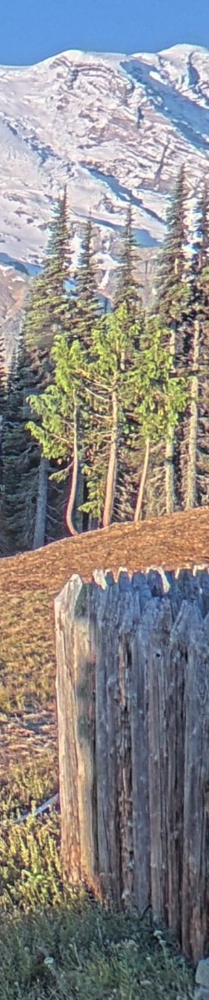
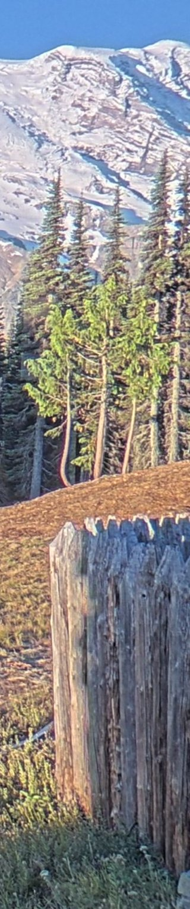
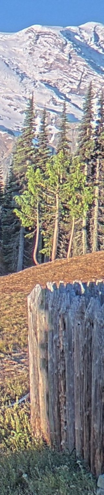
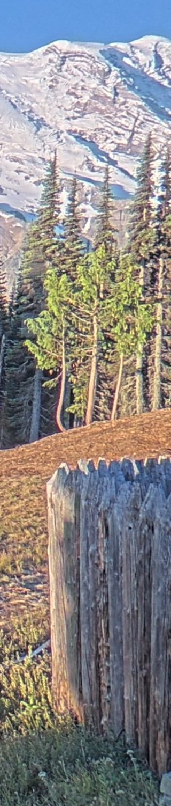
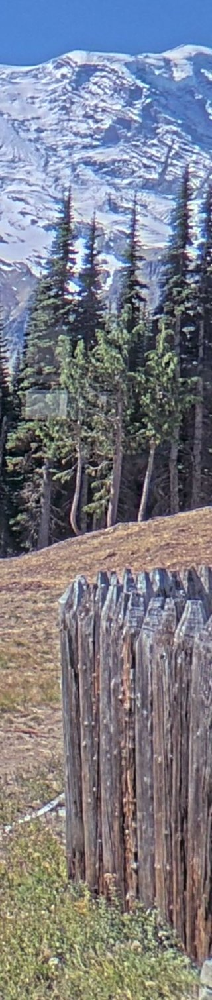
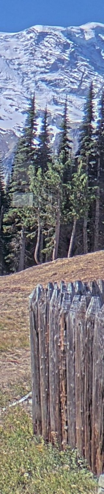
nps daily campaign for 20260908. Generated 2026-09-10T10:54:37Z.
2 candidate(s), 356 row(s), max confidence 0.000






2 candidate(s), 181 row(s), max confidence 0.000
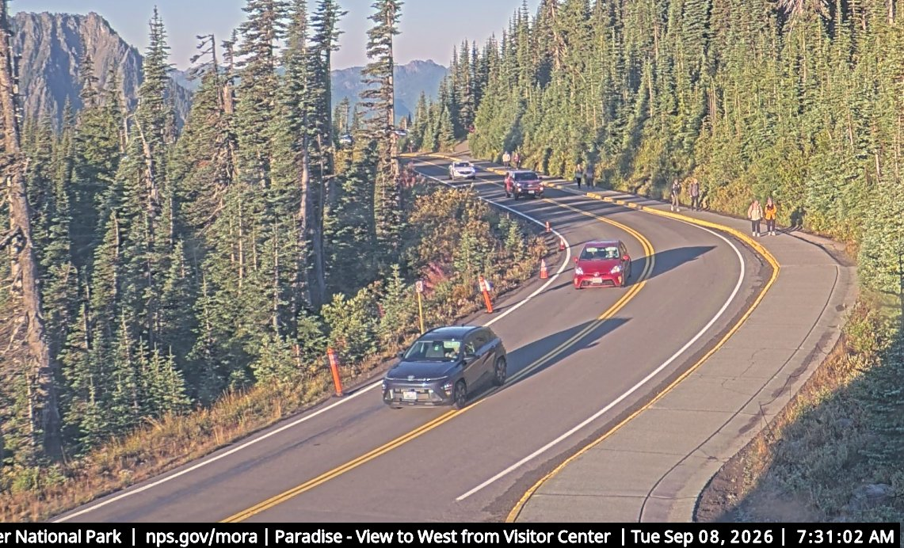
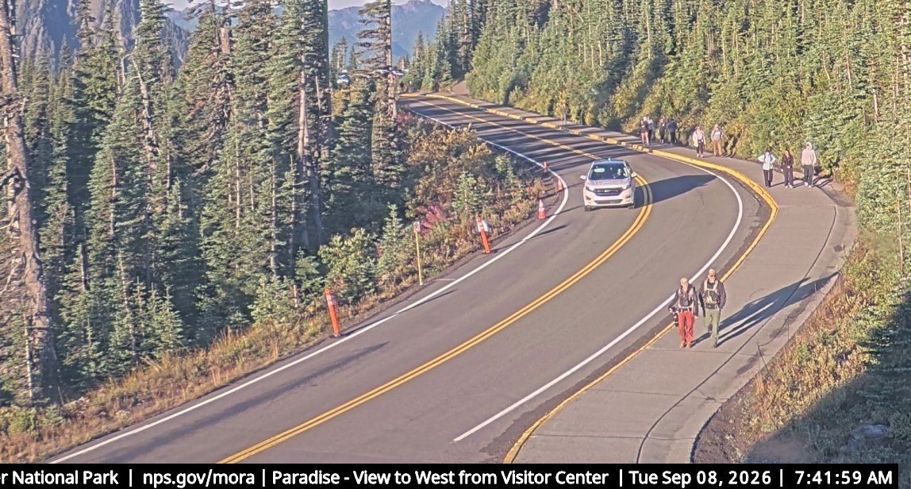
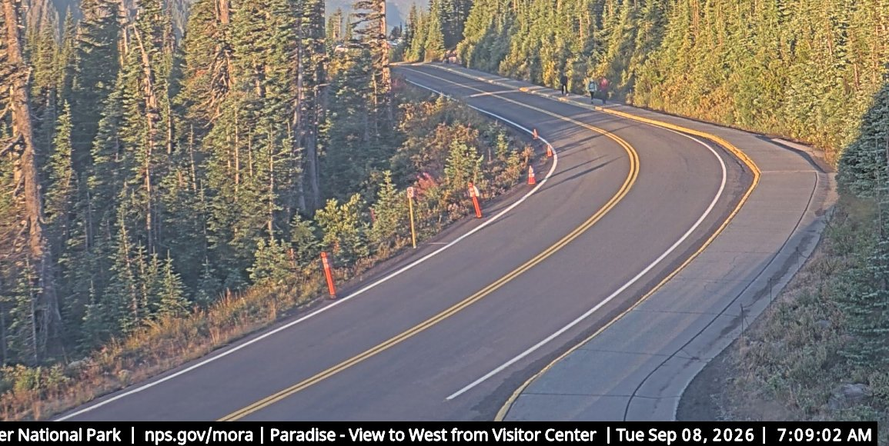
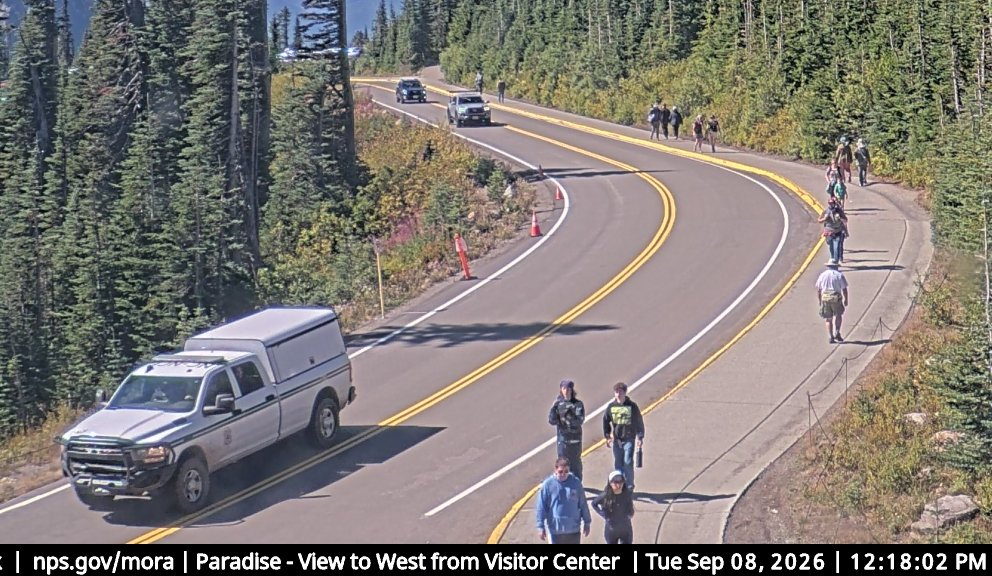
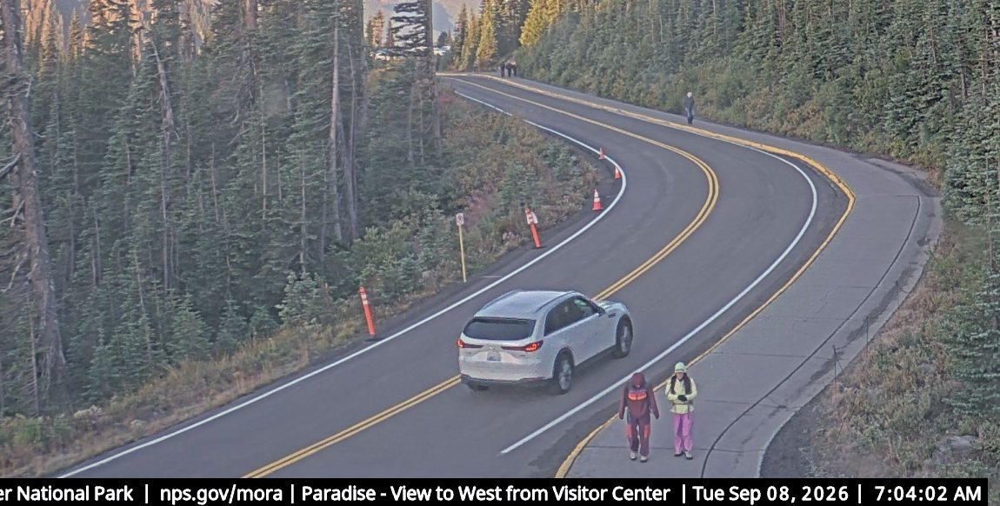